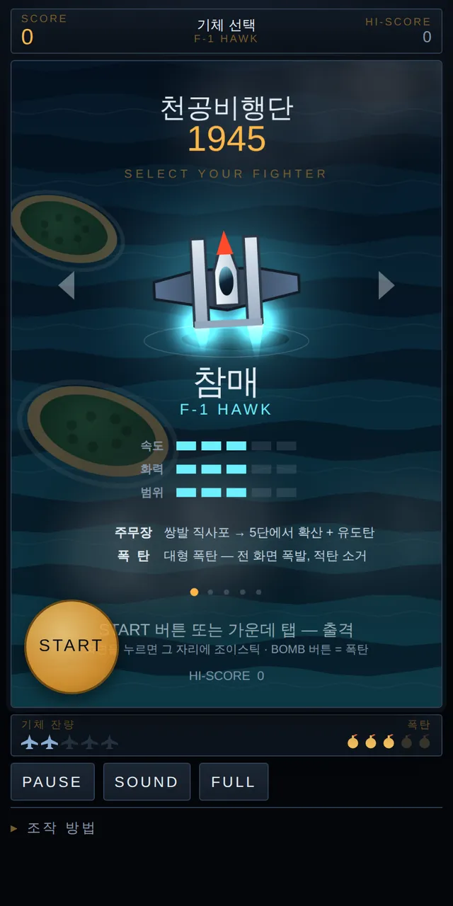
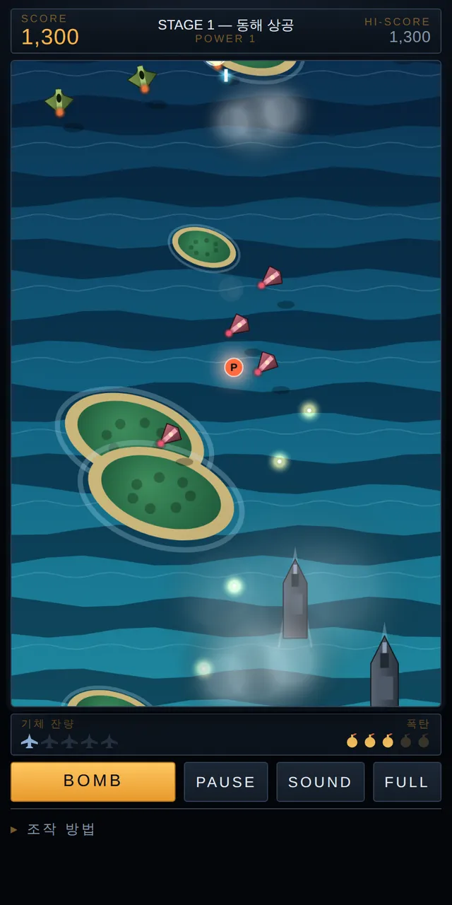

✈️ 액션 게임 · 무료 · 설치 없음
천공비행단 1945
“SELECT YOUR FIGHTER”
- 한 바퀴 20분 안팎
- 기체 5종
- 세로 화면
- 최고 점수 저장
회원가입 없이 누르면 바로 시작돼요
어떤 게임인가요?
옛날 오락실에서 동전을 넣고 하던 세로 비행 슈팅, 기억나시나요?
동해 상공에서 출발해 폭풍 전선, 빙하 해협, 사막 전선, 밤바다, 성층권을 지나 적 수도까지. 전선 끝마다 「W A R N I N G」 경고와 함께 저마다 싸우는 법이 다른 거대한 적이 기다리고 있어요.
열 개의 전선을 모두 돌파하면 더 어려워진 두 번째 바퀴가 시작돼요. 어디까지 갈 수 있을까요?
이렇게 해요
- STEP 1
기체를 골라요
참매·창·부채·솔개·곰. 기체마다 주무장과 폭탄이 달라요.
- STEP 2
움직이면 자동 사격
화면 아무 곳이나 누르면 그 자리에 조이스틱이 생겨요. 사격은 자동이에요.
- STEP 3
위급할 땐 폭탄!
BOMB 버튼이나 다른 손가락 탭으로 폭탄을 터뜨려 적탄을 지워요.

🛩️ 다섯 기체
- 참매 — 쌍발 직사포, 강해지면 확산탄과 유도탄
- 창 — 좁고 강한 고속 관통탄
- 부채 — 화면을 덮는 광각 산탄
- 솔개 — 적을 쫓는 유도 미사일
- 곰 — 중포와 광역 레이저, 목숨이 하나 더
- P는 주무장 강화, B는 폭탄 보급, S는 실드, ★는 보너스 점수예요.
이런 분께 추천해요
- 옛날 오락실 슈팅 게임이 그리운 분
- 짧고 화끈한 게임을 찾는 분
- 최고 점수 경쟁을 좋아하는 친구·가족
시작 화면에서 좌우를 눌러 기체를 고르고, 가운데를 누르거나 START를 누르면 출격해요. 아래 「조작 방법」을 누르면 안내가 펼쳐져요.
📱 어떤 기기에서 하면 좋을까요?
- 가장 좋아요휴대폰 세로로
세로 화면에 맞춘 게임이에요. 엄지 하나로 조이스틱, 다른 손가락으로 폭탄.
- 좋아요컴퓨터·노트북 키보드
방향키나 WASD로 움직이고 SPACE로 폭탄. FULL 버튼으로 전체 화면이 돼요.
- 좋아요태블릿 세로로
화면이 커서 적탄이 잘 보여요. 가로로 눕히면 「세로로 돌려주세요」 안내가 떠요.
오른쪽 위 메뉴(⋮ 또는 ···)에서 「다른 브라우저로 열기」를 눌러 크롬이나 사파리로 열어 주세요. 앱 안에서는 전체 화면이 안 되고 저장이 풀릴 수 있어요.
🍎 아이폰·아이패드에서는
- ① 사파리로 열고 세로로
주소를 사파리에서 열어 세로로 들어 주세요.
- ② 홈 화면에 추가하기
아이폰에서는 FULL 버튼이 보이지 않아요. 공유 버튼(□↑) → 「홈 화면에 추가」로 열면 주소창 없이 꽉 찬 화면으로 즐길 수 있어요.
- ③ 소리
아이폰 옆의 무음 스위치가 켜져 있으면 음악과 폭발음이 나지 않아요. 게임 안의 SOUND 버튼으로 켜고 끌 수 있어요.
- ④ 최고 점수
최고 점수와 마지막에 고른 기체는 그 기기에 저장돼요.
🤖 갤럭시 등 안드로이드에서는
크롬이나 삼성 인터넷으로 열고 FULL 버튼을 누르면 꽉 찬 화면이 돼요. 메뉴(⋮)에서 「홈 화면에 추가」를 해 두면 편해요.
▶ 바로 해 보기
설치도, 회원가입도 필요 없어요.
천공비행단 1945 시작하기game.edoori.co.kr/sky1945/